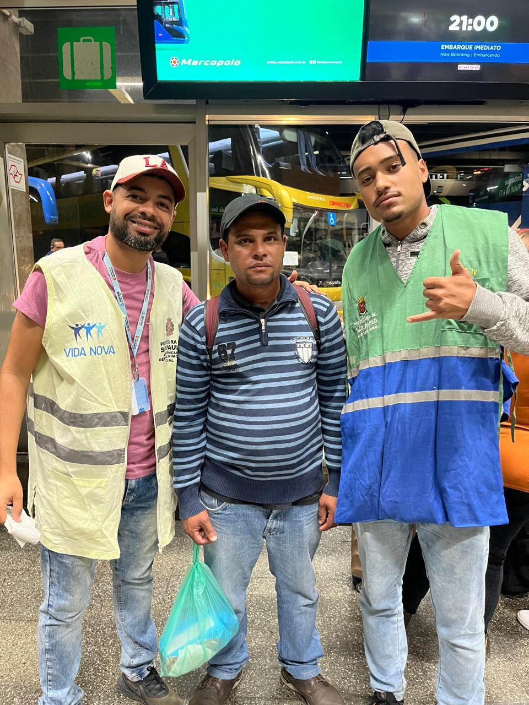

Reencontro Familiar e Superação da Vulnerabilidade Social:

O atendido se encontrava em situação vulnerável por volta de 3 anos e fazia uso desenfreado de entorpecentes, e com a ajuda da equipe realizou recâmbio familiar, qual se encontra agora morando juntamente com a sua mãe.
Leia mais...